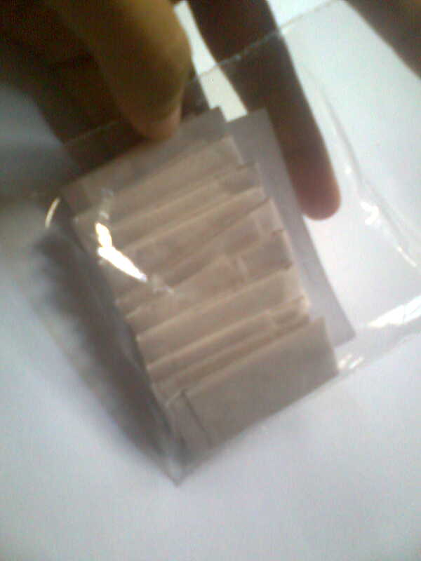

Welcome to
Resep Cara Membuat Martabak Manis tanpa Telur - Lifestyle Fimela.com
2021.03.31 16:59Sukses
Follow search fashion beauty relationship celebrity lifestyle fimelahood More personality zodiak parenting photo video
Lifestyle
Resep Cara Membuat Martabak Manis tanpa Telur
Endah Wijayanti06 Mar 2021, 07:15 WIB Diperbarui 06 Mar 2021, 07:15 WIB
18 Ilustrasi martabak manis./Copyright shutterstock.com/id/g/Fidia+HeliantiFimela.com, Jakarta Mau mencoba bikin martabak manis tapi tak punya stok telur di rumah? Tenang saja. Ada resep mudah yang bisa langsung dicoba. Yuk, langsung simak resep berikut ini.
Baca Juga
Cara Membuat Adonan Martabak Manis Cara Membuat Terang Bulan Teflon Resep Martabak Manis Bangka Empuk dan Lezat
Bahan Utama
10 sdm tepung terigu 2 sdm gula pasir 1 sdt ragi instan 300 ml airBahan Tambahan
1/2 sdt baking powder 1/2 sdt vanili bubuk gula pasir untuk taburan pasta pandan sesuai selera margarin untuk olesan keju parut secukupnya meses cokelat secukupnyaCara Membuat
1. Campur semua bahan utama. Aduk rata hingga gula larut dan tidak ada tepung yang menggumpal.
2. Tutup atas wadah dengan serbet bersih. Istirahatkan adonan selama 30 menit.
3. Tambahkan baking powder, vanili, dan pasta pandan (bila suka). Aduk rata.
4. Panaskan teflon.
5. Tuang adonan ke teflon. Masak dengan api kecil.
6. Saat muncul gelembung di permukaan adonan, taburi dengan gula pasir. Tutup teflon dan tunggu hingga bagian atas adonan tidak basah.
7. Setelah martabak manis matang, pindah ke talenan dan olesi dengan margarin. Taburi dengan keju parut dan meses. Lipat martabak, potong-potong sesuai selera.
Selamat mencoba!
#ElevateWomen
resep resep martabak resep martabak manis elevate womenKredit
Endah Wijayanti AuthorBagikan
18Related Articles
Lifestyle Menu Hari Ini: Tumis Bakso, Sup Jagung dan Tempe Goreng Penyet Yuk, buat menu makan hari ini dengan mencoba rekomendasi menu berikut ini. Lifestyle LADY BOSS: Poppy Dihardjo, Penyintas KDRT yang Bangkit dan Bantu Sesama Perempuan Simak penuturan Poppy Dihardjo, penyintas KDRT yang berhasil bangkit bahkan membantu sesama perempuan dengan nasib serupa di video Lady Boss di atas ini! Lifestyle Mengidap Berbagai Penyakit Kronis, tapi tidak Terlihat Sakit, Perempuan Ini Diremehkan Nakes saat Vaksin Rachel Charlton-Dailey memiliki penyakit autoimun, asma, dan berbagai penyakit kronis lainnya yang tidak terlihat secara langsung, membuatnya sering diremehkan, bahkan ketika ia mendapatkan vaksin. Simak di sini kisahnya. Lifestyle Lezatnya Racikan Tongseng ala Chef Sezai Zorlu di Indonesian Meat Cuisine, Cita Rasanya Lokal Banget Head Chef sekaligus owner Turkuaz Authentic Turkish & Ottoman Cuisine dan Warung Turki Shisha Lounge ini membagikan rahasianya, lho. Lifestyle 4 Tips PDKT dengan Seorang Pria agar Tertarik Padamu Jangan terlalu agresif, ini cara untuk mendekati seorang pria. Artikel Selanjutnya Menu Hari Ini: Tumis Bakso, Sup Jagung dan Tempe Goreng Penyet Artikel Selanjutnya Mengidap Berbagai Penyakit Kronis, tapi tidak Terlihat Sakit, Perempuan Ini Diremehkan Nakes saat Vaksin Keep GoingPopular
CelebrityCara Giorgino Abraham dan Yasmin Napper Jalin Kedekatan Demi Peran di Sinetron
Celebrity8 Potret Ulang Tahun Tya Ariestya, Empat Jam Dikurung di Kamar
UpdateMengenal Puasa Mutih, Manfaat bagi Kesehatan dan Cara Melakukannya
CelebrityAnang-Ashanty Persembahkan Lagu untuk Aurel Jelang Menikah
